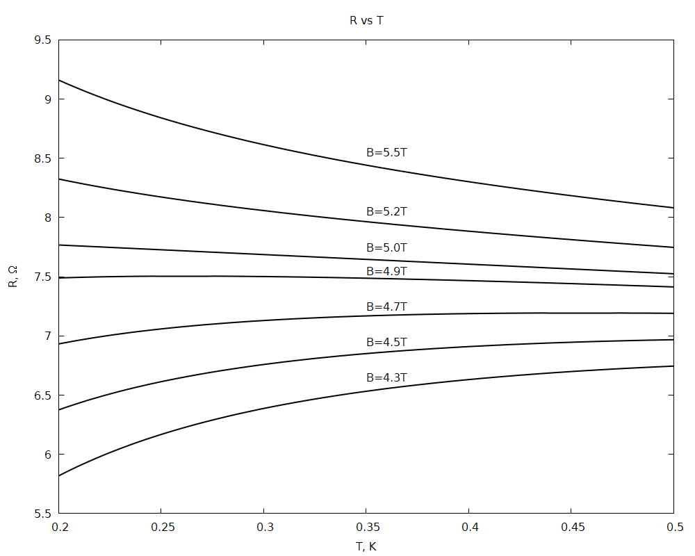

X21 (2021) — English translation
In thin films $\rm In-O$ at low temperatures (of the order of $1~\text{K}$), a superconductor-insulator phase transition controlled by an external magnetic field is observed (the transition occurs when the external magnetic field $B$ changes).
The table “Experimental data” presents measurements of the dependences $R(T)$, where $R$ is the resistance of the sample, $T$ is the temperature, at different external magnetic fields $B$. Resistance measurement error $\varepsilon(R)=0.5\%$. The graph (see Fig.) shows approximate types of dependencies $R(T)$ for some values $B$ indicated in the table. Let us assume that the dependence of resistance $R(T,B)$ has the following form: $$R(T,B) = R_C - \gamma T + A \left( B - B_C \right) T^{\alpha}, $$ где $A, R_C, B_C$ — некоторые параметры, связанные со свойствами образца. Если на кривой $R(T)$ есть точка перегиба (то есть $\dfrac{\partial R}{\partial T}=0$), то обозначим ее координаты, как $\left(T_\text{п}, R_\text{n}\right)$. Примечание: Для функции двух переменных аналогом производной выступает частная производная согласно определениям: ⟦0⟧ ⟦1⟧ Фактически, при вычислении частой производной по $x$ мы полагаем $y$ constant and vice versa, for example: \[ f(x,y) = 3x^2 + 2xy,\quad \frac{\partial}{\partial x}f(x,y) = 6x + 2y,\quad \frac{\partial}{\partial y}f(x,y) = 2x \]

Estimating the error of a physical quantity $X$ allows one to calculate the probability with which its value lies in the interval $[a,b]$. To assess the probability $p$ that the result of the experiment is described by a mathematical expression, the criterion $\chi^2$ (chi-square) is used, calculated according to the following formula: \[ \chi^2 = \sum\limits_{i=1}^{N} \left( \frac{R_\text{теор} - R_\text{эксп}}{\Delta R} \right)^2 \] For a number of points $N=150$, a correspondence table $p$ and $\chi^2$:
(Probability table)
Source: https://pho.rs/p/102